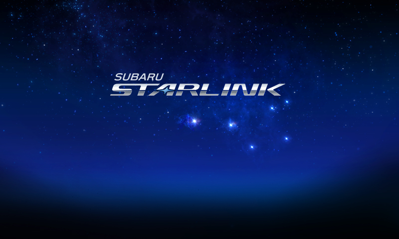

HOME

スマートフォンをナビゲーションシステムに
Bluetooth、或いはUSBで接続してください。
接続完了後、SUBARU STARLINKが
ナビゲーションシステムでご利用になれます。
詳しくは、取扱い説明書をご覧ください。
Looking for STARLINK Safety and Security features?
Access the MySubaru app under the “MORE” tab.